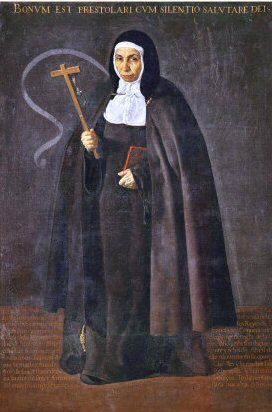

Sunday, November the 8th, 2009
back to: title, date or indexes

This is the Venerable Mother Jerónima de la Fuente, painted by Velázquez in 1620. She posed for him while passing through Seville on her way to Manila in the Philippines where she was to found a convent. The Venerable Mother was renowned for her particularly austere programme of penitence, one which might not go amiss for some of today's unruly hoi polloi. Apparently, she was given to re-enacting the crucifixion by attaching herself to a cross and hanging upside down, like a bat in a cave, for up to three hours at a time.
You can go and prostrate yourself in spiritual abandonment before the Venerable Mother at the National Gallery's exhibition The Sacred Made Real, until January next year. There are twenty-nine other works to see, all of them utterly marvellous. Catholicism has never been so passionate and gruesome.